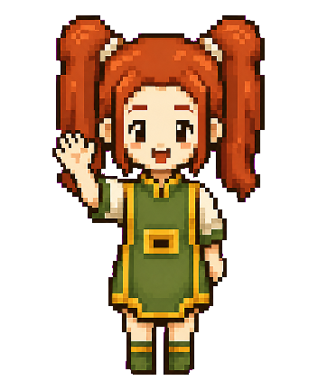
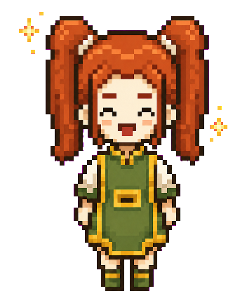
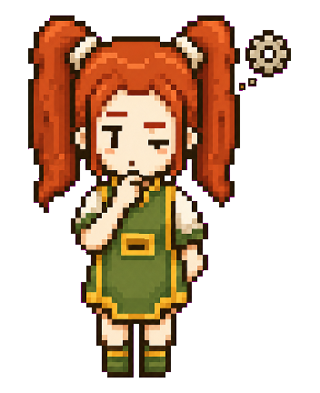
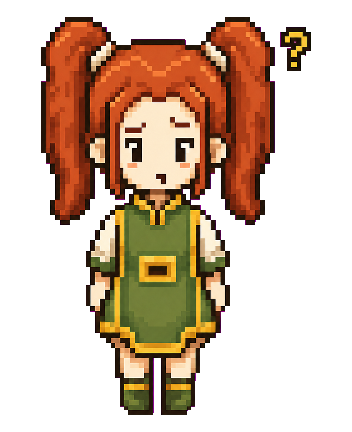
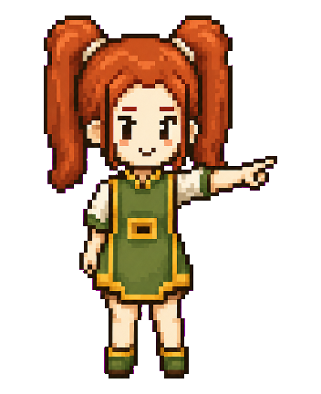

Posisi bottom:24px; right:24px. Idle-bob halus 2.6s, mati total saat prefers-reduced-motion. Saat FAB tampil, Toast stack naik ke bottom: calc(24px + 64px + 12px) supaya tidak bertumpuk — sesuai §2.4 implementation-plan.md.
Muncul sekali per sesi saat FAB pertama kali diklik. Ekspresi nala-greeting-pixel.png (melambai) dipakai di header panel & bubble pertama. Quick-prompt chips langsung tersedia (§7.3).

Saat tool (mis. search_projects) sedang dipanggil, header & FAB ganti ke nala-thinking-pixel.png (gear kecil berputar). Begitu jawaban final berisi proof konkret, ekspresi berubah ke nala-happy-pixel.png (sparkle).


Prinsip anti-fabrikasi (§6 implementation-plan.md): kalau tool kosong, Nala jujur pakai ekspresi nala-confused-pixel.png (alis asimetris + tanda tanya), lalu fallback ke get_contact_channels.

navigate_to tidak langsung jalan otomatis — perlu konfirmasi via chip eksplisit "Bawa saya ke sana", supaya tidak terasa mengambil alih scroll pengunjung (§7.3).

PNG pixel-art transparan hasil image generation dari SVG asal. Setiap pose tetap mengikuti state §3 implementation-plan.md, tetapi punya shading, outline, dan detail sprite yang lebih kaya.
plans/ai-npc-plan/assets/nala-*-pixel.png.
Aset dibuat dengan image generation dari referensi SVG, dibersihkan dari chroma-key, lalu dipixelate/diresize ke rasio 22:27 agar tetap cocok untuk FAB, portrait panel, dan sprite sheet.
prefers-reduced-motion: reduce; PNG Nala sendiri statis sehingga tidak menambah motion loop.